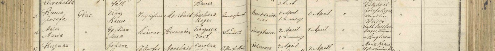

Parte VI · Inverno na Baviera
Capítulo 18 — A Estrada para Heumaden e a Letra Gótica de Moosbach
49,6° N · 12,4° E, Moosbach, Alto Palatinado (Heumaden, Rückersrieth, Burgtreswitz)
A tinta de um padre de aldeia dura mais que a aldeia que ele conheceu.
Uma página de um livro paroquial bávaro, tal como a leio, contradiz o que a família anotou sobre o batismo da Mota: o dia e o nome da madrinha. Outra traz um sobrenome que parece ter sido retocado. Este capítulo é sobre quatro páginas.
Uma estrada que primeiro se percorre no mapa
Heumaden fica a uns cinquenta quilômetros de Maxhütte-Haidhof em linha reta, na direção nordeste, quase na mesma longitude, um pouco mais perto da fronteira tcheca. É uma dessas aldeias que, no mapa, cabem numa vírgula: um punhado de telhados, uma estrada vicinal, campos em volta, manchas escuras de floresta. Faz parte hoje do município de Moosbach, no distrito de Neustadt an der Waldnaab, no Alto Palatinado. A paróquia é a de São Pedro e São Paulo (St. Peter und Paul), no centro de Moosbach, que os alemães chamam de Markt, uma vila com direito antigo de feira. Em volta, a poucos quilômetros uns dos outros, estão os outros nomes desta história: Rückersrieth, onde nasceu Georg Adam Meier, o trisavô de vocês; Burgtreswitz, onde nasceu a trisavó Franziska Voit, uma aldeia que leva no nome a palavra Burg, castelo, porque tem um.
A primeira vez que percorri essa estrada foi no mapa, e é assim que quero começar, porque é assim que vocês provavelmente a percorrerão também. Abri a imagem de satélite e fui aproximando. Primeiro a Europa, depois a Alemanha, depois a Baviera, depois aquela região de colinas baixas e florestas entre o Danúbio e a Boêmia que os alemães chamam de Oberpfälzer Wald, a Floresta do Alto Palatinado. Depois Moosbach, com sua igreja. Depois, a nordeste, Heumaden. Algumas casas, uma rua, campos repartidos em faixas compridas, a herança antiga da lavoura medieval. Fiquei olhando aquelas faixas por muito tempo. Numa delas, talvez, a Mota tenha ordenhado vacas quando moça, antes de casar e ir embora. O texto do centenário diz que Maria “recebia salário ordenhando vacas”. Era ela, diz Marise, “quem conhecia a lida do campo”.
O próprio nome da aldeia parece falar de campo. Heu é feno; Mahd é a ceifa, o corte da relva com a foice. Não sou filólogo e não vou jurar pela etimologia, mas é difícil não ouvir em Heumaden algo como “os prados de feno”, “o lugar onde se ceifa”. Uma aldeia de pasto e de vacas. Faz sentido que a Mota tenha crescido ordenhando. E faz sentido, de um jeito que só percebi depois, que ela tenha passado a velhice em Ribeirão das Pacas, no Alto Vale do Itajaí, cuidando de bichos e de roças, apoiada nas bengalas de pau de que os netos se lembram. O texto de Marise diz que, perto da filha Maria, ela continuou “revolvendo o chão, cultivando suas plantas e criando seus animais”.
Para um meteorologista, aquela região tem ainda outra marca: é o lado de dentro do continente. Longe do mar, o Alto Palatinado tem invernos mais frios e verões mais quentes que o oeste da Alemanha, e o vento que vem do leste, da Boêmia, chega seco e cortante. Os moradores antigos tinham nome para ele. A Mota cresceu sob esse clima de amplitude grande, de geada longa e verão curto, e foi parar num lugar onde a umidade nunca baixa e o inverno é uma estação de poucas semanas. Não sei o que o corpo dela achou da troca. Sei que viveu oitenta e cinco anos.
Os livros paroquiais de Moosbach são guardados hoje pelo arquivo central da diocese de Regensburg, o Bischöfliches Zentralarchiv, e foram digitalizados e postos ao alcance de qualquer pessoa no portal Matricula, que reúne registros de igrejas de meia Europa. É por essas imagens digitais que cito as páginas (o livro de batismos de 1847 a 1904, o livro de casamentos de 1853 a 1935), porque é por elas que vocês, ou qualquer primo, poderão conferir cada linha que vou transcrever. Seja qual for a sala, a mesa ou a tela diante da qual se abre um livro desses, a experiência é a mesma: uma página antiga, uma letra que não se entende e a esperança de achar, no meio dela, um nome conhecido.
A letra que a Mota sabia ler
A primeira coisa que um brasileiro descobre diante de um livro paroquial bávaro do século XIX é que não sabe ler.
O problema é a letra. Os padres e escrivães daquela época escreviam em Kurrentschrift, a escrita cursiva alemã, que foi a letra comum dos países de língua alemã durante séculos, até ser abandonada em meados do século XX. Ela não se parece com nada que aprendemos na escola. O “e” é feito com dois traços verticais quase iguais, como um “n” apertado. O “h” desce abaixo da linha como uma cauda. O “s” tem duas formas, uma comprida no meio das palavras e outra redonda no fim. O “r” parece um “w” pequeno. O “M” maiúsculo, que eu precisava achar acima de tudo, porque era a inicial de Meier, é uma sequência de arcos que, à primeira vista, poderia ser qualquer coisa.
A Mota sabia ler essa letra. O Fata também. Eles aprenderam a escrever assim nas escolas da Baviera, e o texto do centenário conta que eram leitores, que trouxeram livros da Alemanha e depois assinavam jornais de Blumenau, que no começo do século XX ainda se imprimiam em letra gótica. Os filhos deles, nascidos no Brasil, foram à escola falando só alemão, mas aprenderam a escrever no alfabeto latino, em português. Eu, o neto, precisei de tabelas, de exemplos, de muita paciência para reconhecer o nome da minha avó numa página escrita na letra que ela própria usava para escrever cartas. É uma das formas mais concretas da língua silenciada de que falei no capítulo 7: perdeu-se a fala e perdeu-se a mão.
Aprendi devagar. Primeiro as letras isoladas, depois as abreviações. Os padres abreviavam tudo: Gg. para Georg, Kath. para Katharina, Mich. para Michael, Joh. para Johann, k. ou kath. para católico. Usavam aspas como sinal de “idem”, repetindo o que estava na linha de cima. Misturavam o latim no alemão: et para “e”, Procl. para as proclamações canônicas, idem para o mesmo padre. E escreviam os números de um jeito que um meteorologista, acostumado a ler planilhas, achou quase familiar.
Os livros de batismo de Moosbach são tabelas. Cada linha é uma criança. As colunas, da esquerda para a direita, trazem o número do registro, o nome da criança, a parteira, o pai e sua condição, o lugar de moradia, a mãe e sua condição, a origem da mãe, o dia e a hora do nascimento, o dia do batismo, o padre, os padrinhos. Cada página dupla tem uns poucos registros, e cada ano, algumas dezenas. Para achar Maria Meier, eu sabia o ano e o mês. Abril de 1888. Era só uma questão de virar páginas até lá.
Página 441, registro nº 36
Lá estava.
Na página 441 do livro de batismos, entre uma menina chamada Josefa, de uma família de Moosbach, nascida no dia anterior, e um menino de sobrenome Bergmann, nascido no mesmo dia que ela: o registro número 36. Na coluna do nome, em duas linhas, o sobrenome primeiro, como se fazia: Meier, depois Maria.
Vou ler a linha com vocês, coluna por coluna, como a li.
Parteira: duas aspinhas. Idem. Para saber quem era, é preciso subir uma linha, até o registro 35, o da pequena Josefa, nascida no dia 6 de abril à uma da madrugada. Ali está o nome: Glas. A senhora Glas, parteira de Moosbach, tinha feito um parto na madrugada de 6 de abril e outro na madrugada de 7. Duas noites seguidas atravessando o frio da primavera bávara com a sua maleta. Quando, no capítulo 4, imaginei a noite do nascimento da Mota, eu ainda não tinha reparado nas duas aspinhas. Agora sei que a senhora Glas, naquela madrugada, provavelmente estava cansada.
Pai: Gg. Adam Meier. Condição, na leitura que fizemos e que confere com as transcrições do dossiê: Ökonom, que na Baviera daquela época queria dizer agricultor. Morada: Heumaden. Mãe: Franzisca Voit. Origem da mãe: Burgtresw., Burgtreswitz.
Nascimento: 7. April, 2 h. morg. (7 de abril, duas horas da manhã).
Batismo: 7. April.
Madrinha: Kath. Reichenberger, Bäuerin v. Burgtresw. (Katharina Reichenberger, lavradora de Burgtreswitz).
Ficha do Arquivo: Paróquia de St. Peter und Paul, Moosbach (Decanato de Leuchtenberg, Diocese de Regensburg). Livro de batismos 1847–1904 (Matricula: Moosbach_Leuchtenberg005), p. 441, registro nº 36. Batizada: Maria Meier. Parteira: Glas (indicada por “idem”, remetendo ao registro anterior). Pai: Georg Adam Meier (Gg. Adam Meier), Ökonom em Heumaden. Mãe: Franziska Voit (Franzisca Voit), natural de Burgtreswitz. Nascimento: 7 de abril de 1888, às 2 horas da manhã, em Heumaden. Batismo: 7 de abril (data registrada na coluna própria, segundo a nossa leitura). Madrinha: Kath. Reichenberger, Bäuerin v. Burgtresw. Imagem: imagens/doc1_maria_meier_1888.jpg.

Preciso contar uma coisa, porque este livro tem uma regra e eu não vou quebrá-la logo no capítulo em que ela mais importa.
Nas anotações que circulavam na família, e que eu mesmo repeti em mais de um lugar, Maria foi batizada no dia 8 de abril, e a madrinha foi a tia dela, Katharina Meier, lavradora de Heumaden. A página 441, tal como a leio, diz outra coisa. A coluna do batismo traz “7. April”, o mesmo dia do nascimento, o que era muito comum na Baviera católica, onde se batizava depressa por medo de que a criança morresse pagã. E a madrinha se chama Katharina Reichenberger, de Burgtreswitz, a aldeia da mãe.
Há uma hipótese que concilia as duas versões, e eu a registro como hipótese: uma Katharina nascida Meier, irmã de Georg Adam, poderia estar casada com um Reichenberger de Burgtreswitz; nesse caso, seria ao mesmo tempo “a tia Katharina” da tradição e a “Kath. Reichenberger” do livro. Seria bonito. Mas não tenho o documento que prove isso, e uma hipótese bonita é exatamente o tipo de coisa de que um pesquisador deve desconfiar mais. Deixo as duas versões lado a lado, como deixei, nos capítulos anteriores, as duas datas de Gertrudes e os dois lugares de sepultura de Luisa e Walter. A verdade sobre a madrinha da Mota está em algum outro livro, num registro de casamento de Burgtreswitz que ainda não li. Fica para vocês, se quiserem.
Nenhuma dessas dúvidas tira o essencial. Em 7 de abril de 1888, às duas da madrugada, numa casa de Heumaden, nasceu a menina que seria a Mota. O nome que a família repetiu por um século em Ituporanga e em Aurora, sem que ninguém soubesse exatamente onde ficava, tinha uma linha num livro.
Permito-me, outra vez, imaginar.
Moosbach, Alto Palatinado, 7 de abril de 1888. É um sábado. A senhora Glas deixou a casa dos Meier ainda de madrugada. Mais tarde, alguém leva a recém-nascida até a igreja de São Pedro e São Paulo, enrolada em panos contra o frio de abril. É provável que a mãe, Franziska, não vá; as mulheres que acabavam de dar à luz ficavam em casa. Vão o pai, a madrinha, talvez uma vizinha. O padre derrama a água, diz o nome. Depois, na sacristia, abre o livro grande e escreve, na letra que eu levaria um século para aprender a ler, a linha número 36 daquele ano. Ninguém ali imagina que essa menina vai morrer do outro lado do mundo, aos 85 anos, numa terra chamada Aurora, sem nunca mais ver aquela igreja.
Vinte e três de novembro de 1884
Com Maria encontrada, o resto do quebra-cabeça veio por gravidade. Se ela era filha de Georg Adam Meier e Franziska Voit, os dois tinham casado ali, alguns anos antes. O livro de casamentos de Moosbach, que vai de 1853 a 1935, tem na página 93 o registro número 20.
A data, na primeira coluna: 23. Nov., 23 de novembro de 1884. Um domingo.
Noivo: Adam Meier. Condição: Wagner, católico. Wagner, em alemão, é o fabricante de rodas e carroças, o carpinteiro especializado que fazia os aros, os raios, os cubos, as carroças inteiras com que se trabalhava o campo. Morada: Heumaden. Pais: Mich. Meier et Margaretha Pfanenstein, com um “n” só e um tracinho em cima, que é como se abreviava a letra dobrada. Estado: solteiro. Nascido em: 9. März 1859.
Noiva: Franzisca Voit. Condição: Bauerstochter, filha de lavrador, católica. Morada: Burgtreswitz. Pais: Joh. Voit et Barbara Woppman. Estado: solteira. Nascida em: 29. Juni 1861.
Testemunhas: Mich. Meier, Wagner, Heumaden, et Johan Voit, Bauer, Burgtreswitz. Os dois pais. O pai do noivo, que fazia rodas, e o pai da noiva, que lavrava a terra, de pé ao lado dos filhos diante do altar.
Depois, a data da licença civil, 8. Nov. 1884, porque desde 1876 também o casamento precisava passar pelo registro civil, e as 3 Procl., as três proclamações canônicas, os anúncios feitos na missa em três domingos seguidos para que, se alguém soubesse de algum impedimento, falasse. Ninguém falou.
Ficha do Arquivo: Paróquia de St. Peter und Paul, Moosbach. Livro de casamentos 1853–1935 (Matricula: Moosbach_Leuchtenberg013), p. 93, registro nº 20. Data: 23 de novembro de 1884. Noivo: Adam (Georg Adam) Meier, Wagner, católico, de Heumaden, filho de Michael Meier e Margaretha Pfannenstein (Pfanenstein), solteiro, nascido em 9 de março de 1859. Noiva: Franziska Voit (Franzisca), Bauerstochter, católica, de Burgtreswitz, filha de Johann Voit e Barbara Woppmann (Woppman), solteira, nascida em 29 de junho de 1861. Testemunhas: Michael Meier, Wagner em Heumaden, e Johann Voit, Bauer em Burgtreswitz. Licença civil: 8 de novembro de 1884. Três proclamações. Imagem: imagens/doc2_trauung_meier_voit_1884.jpg.

Fiz a conta que todo genealogista acaba fazendo. Em 23 de novembro de 1884, enquanto Adam e Franziska casavam em Moosbach, um bebê de quatro meses chamado Johann Haas dormia em Leonberg, a cinquenta quilômetros dali. Os pais do Fata e os pais da Mota não se conheciam, provavelmente nunca se conheceram, e, no entanto, naquele outono, as duas linhas já estavam traçadas no mapa.
Notei também a mudança de ofício. Em 1884, Adam é Wagner, como o pai. Em 1888, no batismo de Maria, é Ökonom. Entre um registro e outro, o fabricante de rodas parece ter passado a viver da terra, talvez a da família da mulher, talvez a que comprou ou herdou. Não sei os detalhes. O filho do Wagner virou lavrador. A filha do lavrador, Maria, ordenharia vacas por salário. E o neto dela seria pedreiro em Santa Catarina.
Dois batismos, um de inverno e um de verão
Faltavam os dois do altar. Voltei ao livro de batismos, agora para trás.
O primeiro está na página 96, no ano de 1859. A linha é de uma quarta-feira de março. Nome: Adam, e depois Meier. Aqui o registro tem uma particularidade que demorei a entender. O sobrenome parece ter sido retocado, como se outra coisa estivesse escrita antes e tivesse sido corrigida. A transcrição do dossiê que reúne esses documentos interpreta o detalhe como uma legitimação: Adam teria nascido antes do casamento dos pais e sido reconhecido depois, quando Michael e Margaretha casaram. Não sou paleógrafo para afirmar isso com certeza, e por isso digo apenas o que vejo: um nome que foi mexido. Se a leitura do dossiê estiver certa, o trisavô de vocês, Georg Adam, começou a vida com uma pequena irregularidade que o tempo e o casamento dos pais trataram de corrigir.
O pai: Michael Meier, Wagner, de Heumaden. A mãe: Margaretha Pfannenstein, filha de lavrador. O lugar associado ao nascimento: Rückersrieth, a aldeia dela. Nascimento: 9. März, 3 Uhr früh (9 de março, três da madrugada). Batismo: 9. März in Moosbach, no mesmo dia. Padre: idem. E o padrinho: Adam Hartung, filho do ferreiro de Heumaden.
Foi ali que entendi de onde vinha o nome. Na Baviera, era comum que a criança recebesse o nome do padrinho. Georg Adam Meier se chamou Adam por causa de Adam Hartung, filho do ferreiro. Um filho de fabricante de rodas batizado com o nome de um filho de ferreiro. Na aldeia, o ferreiro e o Wagner trabalhavam juntos: um fazia a roda de madeira, o outro forjava o aro de ferro que a envolvia. A roda inteira dependia dos dois. Achei aquilo bonito demais para ser só acaso, e talvez não fosse.
Ficha do Arquivo: Paróquia de St. Peter und Paul, Moosbach. Livro de batismos 1847–1904 (Moosbach_Leuchtenberg005), p. 96. Batizado: Adam (Georg Adam) Meier. Pai: Michael Meier, Wagner em Heumaden. Mãe: Margaretha Pfannenstein, Bauerstochter, de Rückersrieth. Nascimento: 9 de março de 1859, às 3 horas da manhã. Batismo: 9 de março de 1859, em Moosbach. Padrinho: Adam Hartung, filho do ferreiro (Schmiedssohn) de Heumaden. Observação: o sobrenome apresenta retoque; o dossiê paleográfico da família o interpreta como legitimação por casamento posterior dos pais (leitura não confirmada pelo autor). Imagem: imagens/doc3_adam_meier_1859.jpg.

O segundo batismo está na página 115, dois anos e meio depois, num sábado de verão. Nome: Franziska Voit. Pai: Johann Voit, lavrador, de Treswitz, que é como o padre abreviou Burgtreswitz. Mãe: Barbara Woppmann. Nascimento: 29. Juni, Morgens (29 de junho de 1861, pela manhã). Sem hora exata, desta vez. Batismo: no mesmo dia, em Moosbach. E 29 de junho, observem, é o dia de São Pedro e São Paulo: a menina nasceu e foi batizada exatamente na festa dos padroeiros da paróquia. Imagino a igreja enfeitada, a missa solene, e no meio da festa uma família de Burgtreswitz chegando com um bebê de poucas horas.
A parteira, segundo a transcrição, chamava-se Schmirl. A madrinha: Margaretha Albrecht, lavradora.
Albrecht. Li duas vezes. Durante anos achei que Albrecht era o sobrenome da mãe de Josef Haas, a Maria Anna Albrecht de Stoffen, e sorri da coincidência. Depois descobri que a Maria Anna de Stoffen nunca foi nossa: era mãe de outro Joseph Haas. A piscadela da genealogia era maior do que eu pensava. Os nomes se repetem, e é preciso ter cuidado com eles.
Ficha do Arquivo: Paróquia de St. Peter und Paul, Moosbach. Livro de batismos 1847–1904 (Moosbach_Leuchtenberg005), p. 115. Batizada: Franziska Voit. Pai: Johann Voit, Bauer em (Burg)Treswitz. Mãe: Barbara Woppmann (Woppman). Nascimento: 29 de junho de 1861, pela manhã (Morgens). Batismo: 29 de junho de 1861, em Moosbach. Parteira: Schmirl (segundo a transcrição do dossiê). Madrinha: Margaretha Albrecht, Bäuerin. Imagem: imagens/doc4_franziska_voit_1861.jpg.

O quebra-cabeça bávaro
Quando terminei de ler as quatro páginas, a metade bávara da árvore de vocês estava completa até os avós da Mota. Vou desenhá-la em palavras, porque é assim que vocês vão se lembrar dela.
Em Heumaden, um fabricante de rodas chamado Michael Meier. Em Rückersrieth, uma filha de lavrador chamada Margaretha Pfannenstein. Deles nasce, numa madrugada de março de 1859, Georg Adam, que recebe o nome do filho do ferreiro.
Em Burgtreswitz, um lavrador chamado Johann Voit e sua mulher, Barbara Woppmann. Deles nasce, na manhã da festa dos padroeiros de 1861, Franziska.
Adam e Franziska casam-se em Moosbach num domingo de novembro de 1884, com os dois pais por testemunhas. Ele faz rodas; depois vive da terra. Têm filhos: Maria Katharina em 1886, e depois, numa madrugada de abril de 1888, Maria, a Mota. Mais tarde virão Theresia e Michael. Depois de 1892, a família some dos livros de Moosbach e reaparece, oitenta anos depois, em cartas vindas da Saxônia.
A cinquenta quilômetros dali, em Leonberg, o operário Josef Haas, filho de Michael Haas e Kunigunde Stadelmann, e Franziska Dengler têm um filho chamado Johann.
Essas duas linhas vão se encontrar em algum momento antes de 1907. Não sei onde, nem como. O casamento foi em Eibenstock, longe das duas aldeias. Talvez ele tenha ido trabalhar como estucador em alguma obra perto de Heumaden. Talvez ela tenha ido trabalhar em outro lugar, como tantas moças do campo. Talvez tenham se conhecido numa festa, numa feira, numa estação de trem. Não há documento. E é aqui que o meu trabalho de pesquisador termina e começa o de vocês, se quiserem: o livro de casamentos de Eibenstock existe, em algum arquivo da Saxônia, e um dia alguém vai abri-lo.
Penso, ao terminar este capítulo, em tudo o que a Mota não contou. Ela viveu oitenta e cinco anos, sessenta deles no Brasil, e os netos lembram dela como uma avó de olhos azuis e poucas palavras em português, que abraçava muito. Os nomes de Heumaden, de Burgtreswitz, do pai Wagner, do avô ferreiro do padrinho: nada disso chegou até nós pela voz dela, ou chegou em pedaços: a palavra Heumaden repetida, um sotaque, uma lembrança de vacas. O resto ficou guardado na letra que ela sabia ler e nós não. Foi preciso um neto aprender a Kurrentschrift para que ela, finalmente, nos contasse de onde vinha.
Faltava um último ponto no mapa. Dez dias depois de Maxhütte-Haidhof, eu estaria em pé sobre uma linha de metal, em Londres, no lugar onde a humanidade combinou que começam todas as longitudes.
Para vocês descobrirem
- Katharina Reichenberger, a madrinha de Burgtreswitz, era a tia Katharina da tradição, nascida Meier e casada com um Reichenberger? Procurem o registro de casamento em Burgtreswitz, que eu ainda não li.
- O que estava escrito antes do retoque no sobrenome de Adam, na página 96? A imagem está em
imagens/doc3_adam_meier_1859.jpg. Foi mesmo uma legitimação? - Onde um estucador de Leonberg e uma moça de Heumaden se conheceram, e por que foram casar em Eibenstock? O livro de casamentos de lá está em algum arquivo da Saxônia, à espera de quem o abra.
- Além da palavra Heumaden e da lembrança das vacas, o que a Mota contou aos netos sobre a terra dela? Perguntem aos primos que a conheceram.